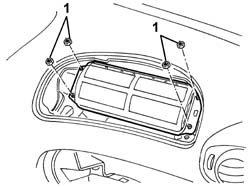
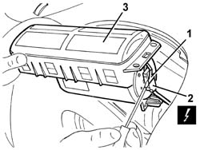
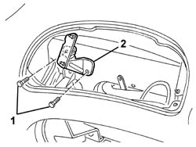
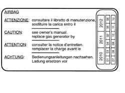

5580C22 AIR BAG MODULE - Passenger side - R.R.
- Path
- Procedures > 55 ELECTRICAL EQUIPMENT > 5580 SPECIAL ACCESSORIES > 5580C air bag system > 5580C22 AIR BAG MODULE - Passenger side - R.R.
- Kind
- repair procedure (removal / refitting; the operation number is the code)
- Applies to
- all engines; all production periods
- Interactive page
- https://sloeber94.github.io/elrnDB-a147/en/#/3025612
Applies to: all engines; all production periods
Place the ignition key in the OFF position and extract it;
Disconnect the battery leads and insulate.
Wait for 10 minutes before continuing.
Applies to: all engines; all production periods
 Removing
Removing
 Refitting
Refitting7040A14 flap of glove compartment trim element (one) - arrange
7040A09 passenger air bag compartment cover - r r
1. Undo the Air Bag module nuts.

Applies to: all engines; all production periods
1. Move the Air Bag module slightly and, using a screwdriver, release the safety retainer for the electrical connection.
2. Disconnect the electrical connections.
 | Name | Connector |
|---|---|---|
2 | Air Bag in dashboard (passenger side) |
3. Recover the side Air Bag module.

Applies to: all engines; all production periods
Place the Air Bag module in the special cupboard, resting it on a free surface with the bag facing upwards.
1. If necessary, undo the bolts fixing the brackets.
2. Recover the brackets.

Applies to: all engines; all production periods
Refitting
RemovingObserve the following precaution.
If a new module is being fitted, attach the appropriate labels. Detach the removable part of the adhesive label from the new module and put it in a specific file recording the vehicle details (model, registration data, chassis no.) and the serial no. of the old module. This file should be kept for future checks. A new label is supplied together with the module to be stuck on top of the existing one. It must be perforated first by the month, 10 years after the year in which the module is fitted (e.g. for 2000, this will be 2010).

Applies to: all engines; all production periods
If removed, position the brackets and secure them using the bolts.
Reconnect the electrical connection.
Attach the safety retainer.
Place the Air Bag module back in its housing.
Tighten the nuts to the recommended torque.
 | Fastening | Component | Ø | Value (daNm) |
|---|---|---|---|---|
- | Nut | PASSENGER AIR BAG MODULE | M6 | 0.8 |
7040A09 passenger air bag compartment cover - r r
7040A14 flap of glove compartment trim element (one) - arrange
Check the operation of the system using the Examiner or the other diagnostic equipment.
Topics linked from this page (5)
- 5580C air bag system
- 7040A09 passenger air bag compartment cover - r r
- 7040A14 flap of glove compartment trim element (one) - arrange
- 7040A31 flap assembly - r r
- Q11 Air Bag in dashboard (passenger side)
Topics that link to this page (15)
- R01 AIRBAG FAILURE WARNING LIGHT ON
- 3330D11 brake servo - r r including seperation from master cylinder - facia lining removed for rhd version
- 5020L10 additional heater system boiler - r r
- 5040A80 expansion/connection pipe - r r
- 5040B30 expansion valve (tube orifice) - r+r
- 5040C10 air conditioner box - r+r
- 5040C50 air conditioner heater radiator - r+r
- 5040C64 a/c evaporator - r+r
- 5040D76 air contitioner distribution flap control motor - r r
- 5040D84 air conditioner left hand air mixer flap control motor - r r
- 5040D86 air conditioner right hand air mixer flap control motor - r r
- 5040D90 air conditioner system wiring bundle - r r
- 5505C34 intergrated instrument under facia front air bag wiring - r r
- 7040A10 instrument facia trim - r+r
- 7040A97 facia trim support beam - r r